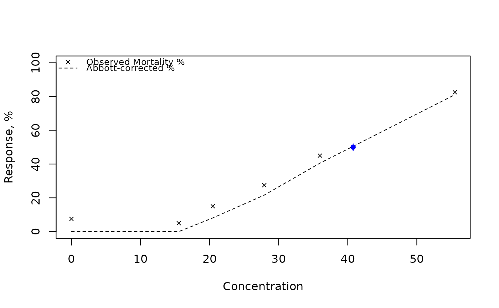

Spearman-Karber Estimation with Modified Handling for Control Mortality
Source:R/SK_TSK_tests_wrapper.R
SpearmanKarber_modified.RdEstimates the LC50 (median lethal concentration) or ED50 (median effective dose) and its confidence interval using the Spearman-Karber method. This version includes robust handling for zero-dose (control) mortality and a Fieller-like approach for confidence interval estimation when control mortality is non-zero.
Usage
SpearmanKarber_modified(
conc,
dead,
total,
conf.level = 0.95,
retData = TRUE,
showOutput = FALSE,
showPlot = FALSE
)Arguments
- conc
A numeric vector of doses or concentrations (must be >= 0 and in increasing order).
- dead
A numeric vector of the number of organisms that died or responded at each
conclevel.- total
A numeric vector of the total number of organisms (population size) at each
conclevel. Can be a single value if all are the same.- conf.level
A single numeric value specifying the confidence level for the interval estimation (e.g., 0.95 for a 95% CI). Must be in (0, 1).
- retData
A logical value. If
TRUE, the results are returned in a list. IfFALSE,invisible(NULL)is returned.- showOutput
A logical value. If
TRUE, the input data table and estimation results (including log-scale values and CIs) are printed to the console.- showPlot
A logical value. If
TRUE, a plot is generated showing the observed and Abbott-corrected mortalities/responses, the estimated LC50, and its confidence interval.
Value
A list containing the estimation results if retData is TRUE, otherwise invisible(NULL). The list includes:
log10LC50Estimated log10 of the LC50.
varianceOfLog10LC50Estimated variance of log10LC50.
StandardDeviationOfmEstimated standard deviation of log10LC50.
confidenceIntervalLog10CI for log10LC50 (vector of two values).
LC50Estimated LC50 (10^log10LC50).
confidenceIntervalLC50CI for LC50 (vector of two values).
conf.levelThe confidence level used for the CIs.
Details
The function operates in two branches:
If control mortality (p0) is near zero, the standard Spearman-Karber method is used on the log-transformed doses, assuming the first observed response is 0%.
If p0 is non-zero, it estimates the background rate (c) by cumulative pooling, Abbott-corrects the proportions, prunes/pools low-dose groups, and uses a modified Spearman-Karber method on the scaled proportions. Confidence intervals are calculated using an approach inspired by Fieller's theorem to account for the background correction uncertainty.
All concentrations must be non-negative and in increasing order.
References
ART CARTER, WYETH-AYERST RESEARCH, CHAZY, NY (1994): Using the Spearman-Karber Method to Estimate the ED50. Proceedings of the Nineteenth Annual SAS Users Group International Conference, Dallas, Texas, April, pp. 10-13. http://www.sascommunity.org/sugi/SUGI94/Sugi-94-195%20Carter.pdf.
Examples
# Example 1: Zero control mortality (standard Spearman-Karber)
x1 <- c(0, 0.2, 0.3, 0.375, 0.625, 2)
n1 <- c(30, 30, 30, 30, 30, 30)
r1 <- c(0, 1, 3, 16, 24, 30)
SpearmanKarber_modified(x1, r1, n1, showOutput = TRUE)
#> idx concentration total dead obs_prop abbott_prop abbott_count
#> 1 0.000 30 0 0.000000 0.000000 0
#> 2 0.200 30 1 0.033333 0.033333 1
#> 3 0.300 30 3 0.100000 0.100000 3
#> 4 0.375 30 16 0.533333 0.533333 16
#> 5 0.625 30 24 0.800000 0.800000 24
#> 6 2.000 30 30 1.000000 1.000000 30
#> log10(LC50) = -0.3468666
#> estimated variance of log10(LC50) = 0.0009713409
#> approx. half-width on log10-scale = 0.06108491
#> 95% CI for log10(LC50) = [-0.40795150200696, -0.285781685210433]
#> estimated LC50 = 0.449918
#> estimated 95% CI for LC50 = [0.390884543727692, 0.517867092299863]
#> $log10LC50
#> [1] -0.3468666
#>
#> $varianceOfLog10LC50
#> [1] 0.0009713409
#>
#> $StandardDeviationOfm
#> [1] 0.03116634
#>
#> $confidenceIntervalLog10
#> [1] -0.4079515 -0.2857817
#>
#> $LC50
#> [1] 0.449918
#>
#> $confidenceIntervalLC50
#> [1] 0.3908845 0.5178671
#>
#> $conf.level
#> [1] 0.95
#>
# Example 2: Non-zero control mortality (modified method)
x2 <- c(0, 15.54, 20.47, 27.92, 35.98, 55.52)
n2 <- c(40, 40, 40, 40, 40, 40)
r2 <- c(3, 2, 6, 11, 18, 33)
results <- SpearmanKarber_modified(x2, r2, n2, retData = TRUE,
showOutput = TRUE, showPlot = TRUE)

#> idx concentration total dead obs_prop abbott_prop abbott_count
#> 1 0.00 40 3 0.075 0.000000 0.000
#> 2 15.54 40 2 0.050 0.000000 0.000
#> 3 20.47 40 6 0.150 0.081081 3.243
#> 4 27.92 40 11 0.275 0.216216 8.649
#> 5 35.98 40 18 0.450 0.405405 16.216
#> 6 55.52 40 33 0.825 0.810811 32.432
#> log10(LC50) = 1.61046
#> estimated variance of log10(LC50) = 0.0002126237
#> approx. half-width on log10-scale = 0
#> 95% CI for log10(LC50) = [1.61046032692499, 1.61046032692499]
#> estimated LC50 = 40.78123
#> estimated 95% CI for LC50 = [40.781230615809, 40.781230615809]
print(results$LC50)
#> [1] 40.78123